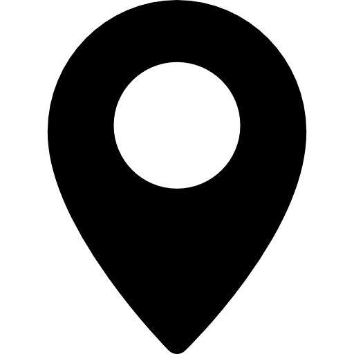

Lokacija
Kurta Schorka 36
71210 Sarajevo, Bosna i Hercegovina

Priznanja
Najbolji aerodrom u Evropi do 1.000.000 putnika
The international transport award

Opšte informacije
IATA kod: SJJ
Kapacitet putnika godišnje: 1.000.000